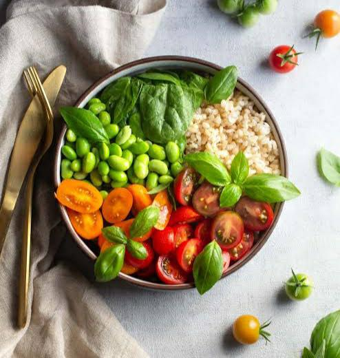

Angelo Palcone, a 21-year-old with a Bachelor of Science in
Information Technology. With a passion for technology and a strong
educational foundation, I'm on a journey to explore the ever-evolving
world of IT.
My Life
Who's in my Life?
In my life, I have the joy of sharing it with my significant other,
Cyla. I have a very supportive and reliable person to rely on which is
my Sister and her dog, the dog.

Food
Food is Life
I have a deep passion for food and derive great joy from the act of
eating. Exploring different cuisines and flavors likely brings
excitement to your life, and you may enjoy cooking or dining out to
savor delicious dishes.